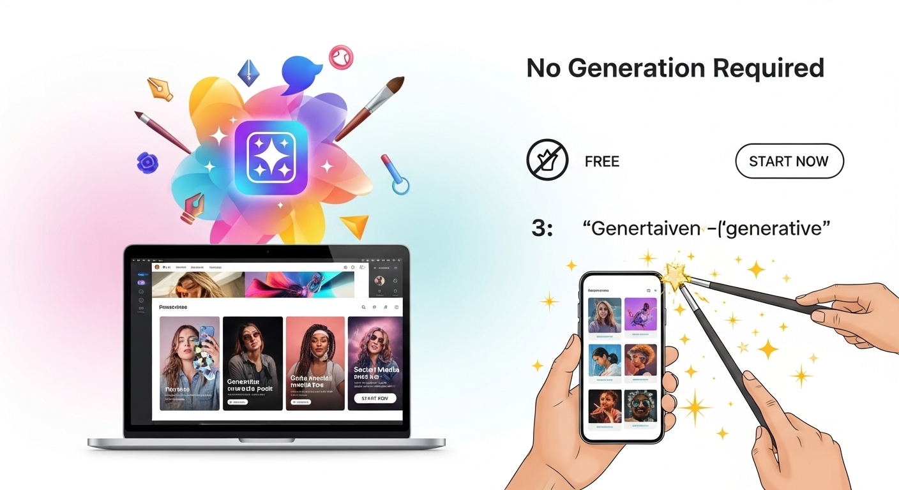
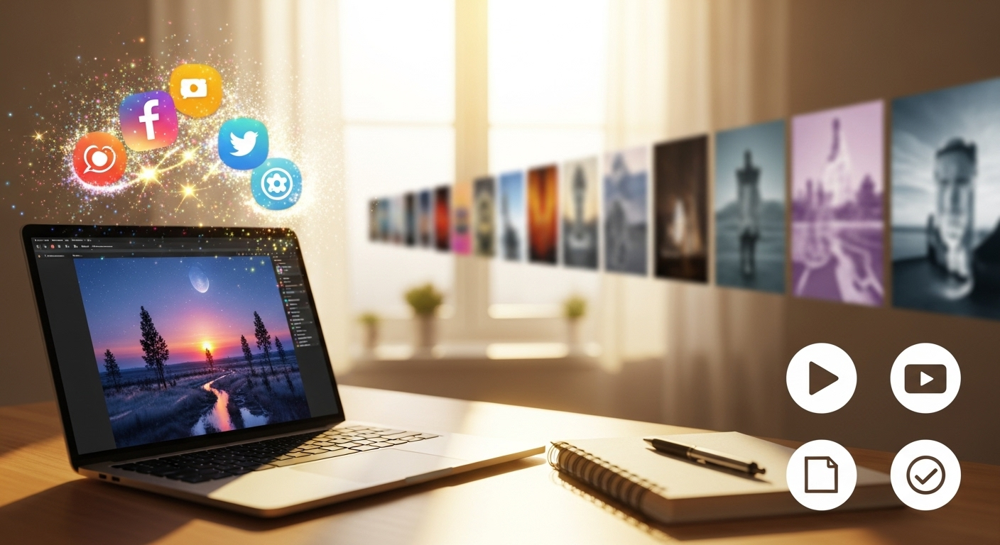
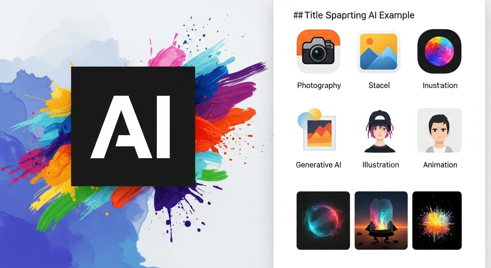

登録不要で今すぐ体験！無料の生成AI画像ツールでSNS映えデザイン作成

導入

デジタル化が進む現代において、視覚的な情報は私たちのコミュニケーションや表現の核となっています。特にSNSの隆盛は、美しい写真や魅力的なイラストが人々の心を掴み、共感を呼ぶ重要な要素であることを示しています。しかし、プロフェッショナルなデザインスキルや高価なソフトウェア、あるいは時間と労力をかけて素材を探すことは、多くの方にとってハードルが高いと感じられるかもしれません。
そんな中、近年急速に進化を遂げている「生成AI画像ツール」は、私たちのクリエイティブな表現の可能性を大きく広げています。まるで魔法のように、テキストの指示だけで瞬時に高クオリティな画像を生成してくれるこの技術は、デザインの専門知識がない方でも、手軽にプロ顔負けのビジュアルコンテンツを作成できる画期的な存在です。
特に注目すべきは、「登録不要」で「無料」で利用できるツールが増えている点です。これにより、個人情報の入力や複雑なアカウント作成の手間を省き、一切の金銭的負担なく、今すぐその驚きの体験を始めることができます。SNSのプロフィール画像、投稿のアイキャッチ、ブログの挿絵、プレゼンテーションの素材、あるいは単なる趣味の創作活動まで、あなたのアイデアを形にする強力なパートナーとなるでしょう。
本記事では、この無料かつ登録不要で利用できる生成AI画像ツールの魅力に迫り、その基本的な仕組みから、自分に合ったツールの選び方、具体的な使い方、そしてSNSで「いいね！」をたくさんもらえるような魅力的な画像を作成するための秘訣まで、わかりやすく丁寧にご紹介していきます。さあ、あなたもこの新しいクリエイティブの世界への扉を開いてみませんか？ 私たちと一緒に、無限の可能性を秘めた生成AI画像の旅に出かけましょう。
登録不要で今すぐ体験！無料の生成AI画像生成とは？
生成AI画像という言葉を耳にする機会が増えましたが、具体的にどのようなもので、なぜ今これほどまでに注目されているのでしょうか。そして、「登録不要」や「無料」といった要素が、私たちユーザーにどのようなメリットをもたらすのか、その本質を深く掘り下げていきましょう。
生成AI画像とは？その仕組みを簡単に解説
生成AI画像とは、人工知能（AI）がテキストの指示（プロンプト）や既存の画像データに基づいて、全く新しい画像を「生成」する技術のことです。これまでの画像編集ツールが、既存の画像を加工したり組み合わせたりするものであったのに対し、生成AIはゼロからオリジナルの画像を創造する能力を持っています。
この技術の根底にあるのは、深層学習（ディープラーニング）というAIの一分野です。特に、「敵対的生成ネットワーク（GAN: Generative Adversarial Networks）」や「拡散モデル（Diffusion Model）」といったモデルが、生成AI画像の進化を牽引しています。
- GAN（敵対的生成ネットワーク）の仕組み GANは、画像を生成する役割を担う「生成器（Generator）」と、生成された画像が本物か偽物かを判定する役割を担う「識別器（Discriminator）」という、2つの異なるAIモデルが互いに競い合いながら学習を進める仕組みです。 生成器は、ランダムなノイズを入力として受け取り、そこから本物に近い画像を生成しようとします。一方、識別器は、本物の画像と生成器が作った偽物の画像を両方見て、どちらが本物かを識別する能力を磨きます。 この2つのAIは、まるで「贋作画家」と「鑑定家」の関係のように、互いに切磋琢磨します。生成器は識別器を騙そうと、より精巧な偽物を生み出す努力をし、識別器は生成器の生み出す偽物を見破ろうと、より高い鑑定眼を養います。この競争的な学習プロセスを繰り返すことで、生成器は最終的に人間の目には本物と区別がつかないほどの高品質な画像を生成できるようになるのです。 GANは特に、リアルな人物の顔や風景、物体の画像を生成する能力に優れており、その登場はAI画像生成の分野に大きな衝撃を与えました。
- 拡散モデル（Diffusion Model）の仕組み 近年、GANに代わって主流となりつつあるのが、この拡散モデルです。拡散モデルは、GANとは異なるアプローチで画像を生成します。その基本的な考え方は、画像を「ノイズ化する過程」と「ノイズから画像を復元する過程」を学習するというものです。 まず、AIは訓練データとなる美しい画像に、段階的にノイズ（ランダムな情報）を加えていきます。まるで、鮮明な写真が徐々に砂嵐のテレビ画面のようになっていくようなイメージです。最終的には、元の画像が全く判別できないほどの純粋なノイズ状態になります。 次に、AIはこの逆のプロセス、つまり「ノイズの中から元の画像を復元する方法」を学習します。ノイズまみれの画像から、少しずつノイズを取り除き、徐々に元の画像へと近づけていく過程を学習するのです。この学習を膨大な回数繰り返すことで、AIはテキストの指示（プロンプト）が与えられた際に、その指示に合致する画像を、ノイズから段階的に生成できるようになります。 拡散モデルは、GANと比較して、より多様なスタイルの画像を生成できる柔軟性があり、特にテキストから画像を生成する能力（Text-to-Image）において優れた性能を発揮します。安定した生成品質と、より細かなコントロールが可能であることから、多くの無料・有料ツールで採用される主要な技術となっています。
これらの複雑な技術を背景に、AIは膨大な量の画像データとそれに付随するテキスト情報を学習しています。例えば、「夕焼けのビーチ」というプロンプトが与えられた場合、AIは学習した「夕焼け」「ビーチ」という概念や、それらが組み合わさった時にどのような色合い、構図、オブジェクトが存在するかを理解し、その情報に基づいて新しい画像を生成します。
生成される画像は、写真のようにリアルなものから、イラスト、油絵、水彩画、アニメ調、3Dレンダリングなど、多種多様なスタイルに対応可能です。これにより、私たちは言葉の力だけで、頭の中に描いたイメージを視覚的な形として具現化できるようになったのです。これは、クリエイティブな表現の壁を劇的に低くし、誰もがアーティストになれる可能性を秘めた、まさに革命的な技術と言えるでしょう。
「登録不要」がもたらす手軽さ
生成AI画像ツールの選択肢が増える中で、「登録不要」という特徴は、利用者にとって非常に大きなメリットをもたらします。この手軽さが、多くの人々が生成AIの世界に足を踏み入れるきっかけとなっているのです。
まず、最も明白な利点は、個人情報の入力が不要であることです。メールアドレスや氏名、パスワードを設定する必要がないため、プライバシーに関する懸念を抱くことなく、安心してツールを利用開始できます。現代社会において、個人情報の漏洩リスクや、不必要な情報収集への警戒心は高まる一方です。そうした中で、アカウント作成に伴う個人情報の提供を一切求められないことは、ユーザーにとって非常に大きな安心材料となります。これにより、生成AIという新しい技術に触れる際の心理的な障壁が劇的に低減され、「まずは試してみよう」という気軽な気持ちでアクセスしやすくなります。
次に、利用開始までのスピードが格段に速いことです。通常、新しいオンラインサービスを利用する際には、アカウント作成、メール認証、プロフィール設定など、いくつかのステップを踏む必要があります。これらの手続きは、数分から場合によっては数十分かかることもあり、その間にせっかくのアイデアが冷めてしまったり、利用意欲が薄れてしまったりすることもあります。しかし、登録不要のツールであれば、ウェブサイトにアクセスした瞬間からすぐに画像生成を試すことができます。アイデアがひらめいたその時に、タイムラグなく表現活動を始められるのは、クリエイティブな思考の流れを途切れさせない上で非常に有効です。この即時性は、特にSNS投稿など、スピードが求められる場面で大きなアドバンテージとなります。
また、複数のツールを気軽に比較検討できるというメリットもあります。生成AI画像ツールは日々進化しており、それぞれに得意なスタイルや機能、操作感があります。例えば、あるツールはリアルな風景画に強く、別のツールはアニメキャラクターの生成に優れている、といった特性があります。登録が必要なツールでは、一つ一つアカウントを作成して試すのは手間がかかり、途中で挫折してしまうことも少なくありません。しかし、登録不要であれば、気になるツールを次々と試してみて、自分にとって最も使いやすく、イメージ通りの画像を生成してくれるものを見つけることができます。これは、最適なツール選びにおいて非常に重要な要素であり、ユーザーが自分に合った「相棒」を見つけるための自由度を高めます。
さらに、心理的なハードルが低いという点も挙げられます。「とりあえず試してみよう」という軽い気持ちでアクセスできるため、AI技術に不慣れな方や、新しいツールに抵抗がある方でも、気軽に挑戦しやすい環境が整っています。もし使い方がわからなくても、個人情報を登録しているわけではないので、そのままサイトを閉じれば良いだけです。また、誤って不適切なプロンプトを入力してしまったり、期待通りの画像が生成されなかったりした場合でも、登録情報と紐付けられていないため、気兼ねなく試行錯誤を続けることができます。このような気軽さが、生成AI画像の普及を後押ししていると言えるでしょう。
このように、「登録不要」というシンプルながらも強力な特徴は、ユーザーが余計な手間や心配なく、純粋にクリエイティブな活動に集中できる環境を提供します。この手軽さこそが、生成AI画像ツールが広く受け入れられ、私たちの日常に溶け込みつつある大きな理由の一つなのです。
「無料」で試せる敷居の低さ
生成AI画像ツールの「無料」提供は、その普及において「登録不要」と同様、あるいはそれ以上に強力な推進力となっています。金銭的な負担がないことは、ユーザーが新しい技術やサービスを試す際の心理的障壁を限りなくゼロに近づけます。
最も直接的なメリットは、コストを一切かけずに利用できるという点です。通常、高品質な画像編集ソフトウェアやストックフォトサービスは、月額料金やライセンス料が発生します。例えば、プロ向けの画像編集ソフトは月額数千円、ストックフォトサイトは数枚の画像ダウンロードで数百円から数千円かかることも珍しくありません。しかし、無料の生成AIツールであれば、これらの費用を心配することなく、プロフェッショナルなレベルの画像を生成することが可能です。これは、趣味でSNS投稿用の画像を作りたい個人ユーザーや、ブログの挿絵を探しているブロガー、あるいはスタートアップ企業でデザイン費用を抑えたい場合など、予算が限られている方にとって、非常に魅力的です。
次に、気軽に「試す」ことができるという点が挙げられます。有料サービスの場合、料金を支払う前に「本当に自分にとって価値があるのか」「使いこなせるのか」「費用対効果はどうか」といった悩みがつきまといます。特に、AI画像生成というまだ新しい技術に対しては、その効果や実用性への疑問から、投資をためらう人も少なくありません。しかし、無料であれば、そのような心配は無用です。「まずは試してみて、自分のイメージ通りの画像が作れるか確認しよう」というスタンスで、気軽にAI画像生成の世界に飛び込むことができます。もし期待通りの結果が得られなくても、金銭的な損失は一切ありません。この「失敗を恐れない」環境は、新しい技術への挑戦を促し、好奇心を刺激します。
また、学習コストをかけずにスキルを磨けるという側面もあります。生成AI画像生成は、プロンプト（指示文）の書き方一つで結果が大きく変わるため、効果的なプロンプトを作成するにはある程度の試行錯誤が必要です。どのような言葉を選べば良いのか、どのようなキーワードを組み合わせれば良いのか、ネガティブプロンプトはどのように活用すべきか、といった知識や経験は、実際に手を動かして試すことでしか得られません。無料ツールであれば、何百回、何千回とプロンプトを試したり、様々な表現方法を実験したりしても、追加料金が発生することはありません。これにより、ユーザーは心ゆくまでAIとの対話を楽しみながら、自分だけのプロンプト作成術を身につけていくことができるのです。これは、AIアートのスキルを向上させる上で非常に貴重な機会となります。
さらに、幅広い層のユーザーにリーチできるという点も重要です。学生、主婦、高齢者、あるいは単に新しいものに興味があるだけの人々まで、金銭的な理由で利用を諦めることなく、誰でも気軽にAIの最先端技術に触れることができます。これにより、生成AI画像の活用シーンは多様化し、予期せぬクリエイティブなアイデアが生まれる土壌が育まれます。例えば、地域のイベント告知ポスターのデザインにAI画像を活用したり、個人的なメッセージカードにユニークなイラストを添えたりと、プロフェッショナルな用途だけでなく、日常の様々な場面でAI画像が使われるようになるでしょう。
無料であることは、単に経済的な負担がないというだけでなく、ユーザーが新しい技術に触れ、学び、創造する上での心理的な障壁を取り除き、より多くの人々がデジタルクリエイティブの世界に参加できる機会を提供します。この「無料」という敷居の低さが、生成AI画像技術の爆発的な普及に大きく貢献していることは間違いありません。
おすすめ生成AI画像ツールの選び方

生成AI画像ツールは日々進化し、その種類も豊富になってきました。多種多様な選択肢の中から、自分に最適なツールを見つけることは、効率的かつ満足のいく画像生成体験のために非常に重要です。ここでは、目的やスキルレベルに応じた選び方のポイントを、具体的に5つの視点から解説します。
選び方１．直感的な操作で初心者におすすめのAIツール
生成AI画像に初めて触れる方にとって、ツールの操作性は最も重要な要素の一つです。どれだけ高性能なツールであっても、使い方が複雑であれば、途中で挫折してしまう可能性があります。そこで、初心者の方には「直感的な操作」が可能なツールを選ぶことを強くおすすめします。
直感的な操作とは、具体的にどのような特徴を指すのでしょうか。
まず、ユーザーインターフェース（UI）がシンプルで分かりやすいことが挙げられます。画面がごちゃごちゃしておらず、主要な機能がどこにあるか一目で理解できるデザインが理想です。例えば、ウェブサイトにアクセスした際に、プロンプトを入力する大きなテキストボックスが中央に配置され、その隣に「生成」ボタンが明確に表示されているような設計は、ユーザーが迷うことなく次のステップに進めるように導きます。余計なメニューや設定項目が初期画面に表示されず、必要に応じて詳細設定を開くような配慮も、初心者にとっては非常に親切です。
次に、プロンプト入力の補助機能が充実しているツールも初心者には非常に役立ちます。例えば、どのようなキーワードを入力すれば良いか迷った際に、入力欄の下にヒントを表示してくれたり、人気のプロンプト例を提示してくれたりする機能があると、アイデア出しの助けになります。また、特定のスタイル（例：イラスト調、写真調、アニメ調など）や雰囲気（例：明るい、幻想的、SF的など）を、プルダウンメニューやボタンで簡単に選択できる機能も、プロンプト作成の手間を省き、望む結果に近づける上で有効です。これにより、ユーザーは複雑なプロンプトを自分で考えることなく、視覚的な選択肢から直感的にイメージを伝えることができます。
さらに、プレビュー機能や複数画像を一度に生成する機能も、効率的な試行錯誤を可能にします。生成された画像をすぐに確認でき、気に入らなければすぐに別のプロンプトで再生成できる。あるいは、一つのプロンプトから複数のバリエーションを生成し、その中からベストなものを選ぶことができる。このような機能は、初めてのユーザーが試行錯誤を楽しみながら、理想の画像にたどり着くための手助けとなります。例えば、同じプロンプトでもAIが異なる解釈で複数の画像を生成してくれることで、「こんな表現もあるのか」という新たな発見にも繋がり、学習意欲を高めてくれます。
また、エラーメッセージが分かりやすいことも重要です。もしプロンプトに問題があったり、ツールの利用制限に達したりした場合でも、「何が問題で、どうすれば解決できるのか」が明確に示されることで、ユーザーはスムーズに作業を続けることができます。例えば、「不適切なキーワードが含まれています」や「一日の生成上限に達しました」といった具体的なメッセージは、ユーザーが次に取るべき行動を理解する上で非常に役立ちます。
直感的な操作性の高いツールは、専門知識がなくてもすぐに画像の生成を始められるため、「AIって難しそう」という先入観を払拭し、生成AIの楽しさを実感させてくれます。まずはこのようなツールから始めて、徐々に慣れてきたら、より高度な機能を持つツールへとステップアップしていくのが良いでしょう。多くの無料ツールは、この直感性を重視した設計になっているため、気軽に試してみて、自分にとって最も使いやすいインターフェースを持つものを見つけることが大切です。
選び方２．多様なスタイルに対応するクリエイティブ向けAIツール
生成AI画像の魅力の一つは、その表現の幅広さにあります。単にリアルな写真を生成するだけでなく、イラスト、絵画、アニメ、3Dモデルなど、多岐にわたるビジュアルスタイルに対応できるツールは、クリエイティブな表現を追求したいユーザーにとって非常に価値があります。
多様なスタイルに対応するツールを選ぶ際のポイントは、生成できるスタイルの種類が豊富であることです。
- 写真のようなリアルな画像: 風景、人物、動物、プロダクト、食べ物など、まるでプロのカメラマンが撮影したかのような高精細な画像を生成できるか。光の表現、影の落ち方、素材の質感（金属の光沢、布の柔らかさ、肌のきめ細かさなど）の再現度が非常に重要です。特定のレンズ効果（ボケ味、広角、望遠）やフィルター効果（セピア、モノクロ）を再現できるかも確認しましょう。
- イラストレーション: 水彩画、油絵、パステル画、鉛筆画、コミック調、アメコミ調、スケッチ、デフォルメされたキャラクターイラストなど、様々な画風のイラストを生成できるか。線の太さ、色の塗り方、筆致の再現性もポイントです。キャラクターデザインや絵本の挿絵、ブログのアイキャッチなど、幅広い用途で活用できます。
- アニメ・漫画調: 日本のアニメや漫画のような、特定のデフォルメや色彩表現、線のタッチ